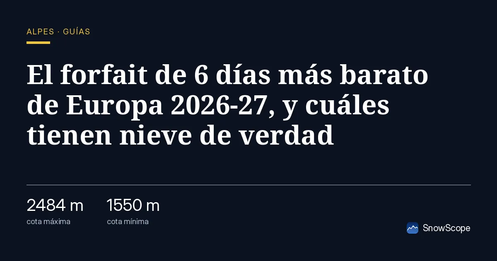

El forfait de 6 días más barato de Europa 2026-27, y cuáles tienen nieve de verdad
La semana de esquí más barata de Europa este invierno no está en Eslovenia, aunque Eslovenia tenga algunos de los precios más bajos. Les Karellis, en los Alpes franceses, vende un forfait adulto de 6 días por 191 EUR y, en nuestro historial de nieve de 46 inviernos pasados, tiene 19 semanas al año con al menos 50 cm de nieve en 9 de cada 10 inviernos. Los forfaits baratos eslovenos no tienen ninguna.
Consulta la previsión de nieve en tiempo real de Les Karellis en la app SnowScopeEspesor de nieve, alertas de nieve polvo y mapa 3D, gratis.
Los diez forfaits de 6 días más baratos que hemos revisado
Hemos tomado los precios de adulto para 6 días que publican las estaciones para el invierno 2026-27 y los hemos ordenado. Les Karellis es el primero con 191 EUR, luego Krvavec con 205 EUR, Rogla desde 210 EUR (hasta 237 EUR en las fechas de más demanda), el Pass Horizon de Orcières Merlette con 227 EUR, que además incluye la piscina y la pista de hielo, y Vogel con 230 EUR.
El segundo grupo va muy ajustado: Galtür con 258 EUR en temporada baja, Livigno con 258,5 EUR durante su promoción del 28 de noviembre al 18 de diciembre de 2026, Les 2 Alpes con 266,5 EUR, Kühtai con 269 EUR en temporada baja y Valloire-Valmeinier con 278,5 EUR. La diferencia entre el primero y el décimo es menor de lo que la mayoría esperaría, así que debe decidir la nieve.
El precio es solo media historia: la comprobación de la nieve
Un forfait barato solo es barato si hay nieve para esquiar. Para cada estación hemos mirado la cota media en nuestro historial de nieve y hemos contado las semanas de un invierno normal que tienen al menos 50 cm de nieve en 9 de cada 10 inviernos. Las llamamos semanas con nieve garantizada. Cincuenta centímetros es más o menos lo que se necesita para que abran la mayoría de las pistas sin piedras.
Les Karellis tiene 19 semanas con nieve garantizada a 2017 m. Les 2 Alpes tiene 20 a 2397 m, Valloire-Valmeinier 19, Galtür y Kühtai 18 cada una, Orcières Merlette 16 y Livigno 13. Krvavec, Rogla y Vogel tienen 0: su cota media está entre 1151 m y 1718 m y en un diciembre normal tiene entre 6 y 10 cm de nieve natural. Pueden ser igualmente divertidas con nieve artificial, pero ahí apuestas por el tiempo.
Nuestro veredicto para una semana de esquí económica
Para una semana barata con buenas posibilidades de buena nieve, Les Karellis es el claro ganador: el precio más bajo y 65 cm de nieve en un diciembre normal en cota media, 110 cm en enero. Es un dominio pequeño con 45 km de pistas, así que encaja más con familias y esquiadores de nivel intermedio que con quienes quieren un valle nuevo cada día.
Si quieres más terreno por un poco más de dinero, Les 2 Alpes te da 108 km de pistas y los remontes más altos de la lista, hasta 3511 m, por 266,5 EUR. Kühtai es la opción austriaca: sus remontes empiezan a 1939 m, así que incluso la parte baja suele tener 61 cm en diciembre. Galtür es la alternativa tranquila en el valle de Paznaun.
Cuándo ir para pagar el precio bajo
Varios de estos precios son tarifas de temporada baja. Galtür y Kühtai cobran más en temporada alta, y los 258,5 EUR de Livigno solo son válidos hasta el 18 de diciembre de 2026. La semana del 12 al 19 de diciembre es el punto óptimo: los precios bajos todavía se aplican y las estaciones por encima de 2000 m suelen tener ya su base de nieve.
En enero la nieve es más profunda en casi todas las estaciones de la lista. Si tus fechas son flexibles, una semana de enero fuera de las vacaciones escolares da la mejor combinación de precio y nieve, pero comprueba qué tarifa se aplica en tus fechas antes de reservar.
Dónde dormir por menos
El forfait es solo parte del gasto. Estaciones pequeñas como Les Karellis y Orcières Merlette tienen muchos apartamentos cerca de los remontes, lo que mantiene la semana barata para una familia. En Galtür y Kühtai, las pensiones suelen ser más baratas que los hoteles. El mapa de este artículo muestra alojamientos por menos de 120 EUR la noche para la semana del 12 al 19 de diciembre, cerca de las estaciones que recomendamos.
Comprueba siempre la web oficial de la estación antes de comprar: los precios pueden cambiar durante el invierno y las tarifas más baratas suelen ser solo online.
Consejos para esquiadores
- Mejor relación calidad-precio para una semana de esquí: Les Karellis, 191 EUR por 6 días y 19 semanas con nieve garantizada.
- Más terreno: Les 2 Alpes, 266,5 EUR por 6 días y remontes hasta 3511 m.
- Los forfaits eslovenos son baratos pero bajos: planéalos solo después de una buena nevada.
- Compra en la web oficial de la estación y consulta el boletín de aludes antes de salir fuera de pista.
Más mapas (sitios externos)
Referencias y créditos
- Les Karellis, official prices 2026-2027 www.leskarellis.com/fr/tarifs-2026-2027-sans-lien
- Krvavec: official lift-pass prices (2026-27), checked 13 November 2026 rtc-krvavec.si/cenik-urnik
- Rogla: official lift-pass prices (2026-27), checked 13 November 2026 www.rogla.eu/sl/aktualna-ponudba/ceniki/zimske-aktivnosti/cenik-smucarskih-vozovnic-v-sezoni-20262027/
- Orcières, official ticketing, winter 2026-27 pass.orcieres.com/en/ticketing
- Vogel: official lift-pass prices (2026-27), checked 13 November 2026 vogel.si/cenik-zima/
- Galtür: official lift-pass prices (2026-27), checked 13 November 2026 www.galtuer.com/en/winter/operating-times-prices/skipass-prices-silvapark
- Livigno, official ski pass price list 2026-27 (PDF) www.livigno.eu/hubfs/tariffe_26-27.pdf
- Les 2 Alpes, official ski pass shop, prices 2026-27 www.skipass-2alpes.com/en/pricing
- Kühtai: official lift-pass prices (2026-27), checked 13 November 2026 www.kuehtai.info/service/service/preise-wintersaison-2026-2027.html
- Valloire, official ski pass shop (Galibier-Thabor), winter 2026-27 skipass.valloire.com/fr/
Sobre estas cifras
Cifras de nieve: histórico de nieve de SnowScope, 46 inviernos pasados (1980-81 a 2025-26) a tres alturas de la estación, un modelo del pasado corregido por altitud (una estimación para una zona, no partes de la estación). Remontes, pistas y acceso: las fuentes de abajo, comprobadas en la fecha indicada.
Citar este informe
Para investigación, docencia o prensa: cifras y gráficos reutilizables libremente bajo CC BY 4.0 con esta cita.
SnowScope (2026), El forfait de 6 días más barato de Europa 2026-27, y cuáles tienen nieve de verdad, https://snowscope.app/blog/es/2026/11/cheapest-6-day-ski-pass-europe-2026-27-snow-check.html, consultado el 2026-11-19
SnowScope (Atlas Labs). (2026, November 19). El forfait de 6 días más barato de Europa 2026-27, y cuáles tienen nieve de verdad. SnowScope snow reports. https://snowscope.app/blog/es/2026/11/cheapest-6-day-ski-pass-europe-2026-27-snow-check.html
BibTeX
@misc{snowscope2026cheapest6dayskipasseurop,
author = {{SnowScope (Atlas Labs)}},
title = {El forfait de 6 días más barato de Europa 2026-27, y cuáles tienen nieve de verdad},
year = {2026},
month = nov,
howpublished = {\url{https://snowscope.app/blog/es/2026/11/cheapest-6-day-ski-pass-europe-2026-27-snow-check.html}},
note = {Published 2026-11-19 13:06 UTC; accessed 2026-11-19}
}· CC BY 4.0 · Métodos, datos y herramientas →
Les Karellis: nieve y temperatura según la altura, este invierno vs el pasado (herramientas) →
Sigue Les Karellis
Gratis: un aviso cuando llega la nieve y la previsión cada mañana.
Más partes de nieve

Orcières Merlette ofrece una base elevada a 1826 m y un pase de 6 días desde 227 EUR, lo que la convierte en una opción fiable para un viaje de esquí en diciembre.

Clasificamos las estaciones de esquí francesas según las probabilidades de nieve en diciembre y los precios de los forfaits, empezando desde 36,00 EUR por un pase diario de adulto en Les Karellis.

Diez puntos prácticos para un viaje de esquí a Livigno: las carreteras, el frío, las tiendas libres de impuestos, las dos laderas y la mejor época de nieve, según 46 inviernos pasados.